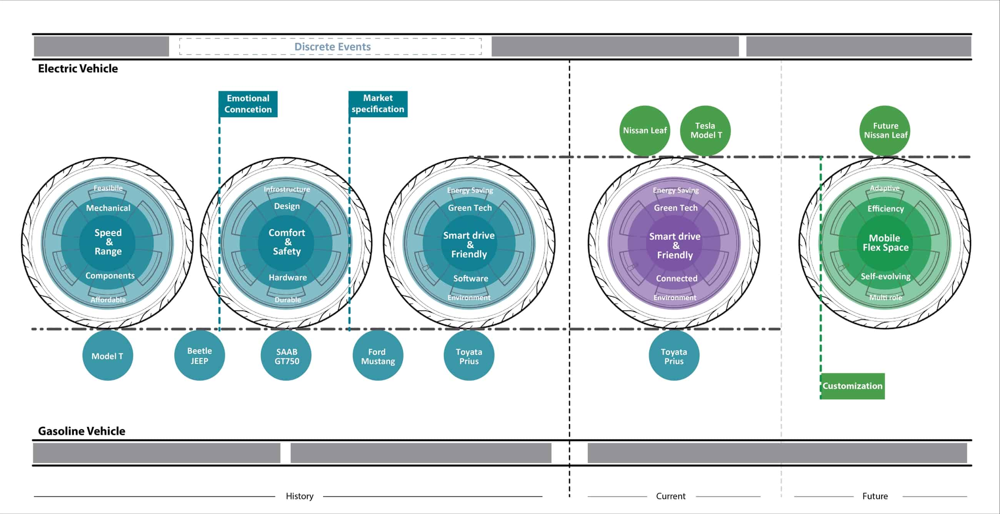

Vacuum Cleaner
Highlight of this design is the semi-transparent housing case and silk-printed patterns on it.
Roadmap
Illustration of how electric and gasoline vehicle has evolved over the time course.

Roadmap
Illustration of how electric and gasoline vehicle has evolved over the time course.
Photoshop Rendering
Practice of how to render a metal faucet in PS and understand the highlight, shadow and transition.

Rotary Arm for Dishwasher
This specifically designed rotary arm can cover the corners which usually are dead corners for water spray to cover.
Instruction Design
Develop the understanding of grid system, structure and hierarchy order in typography class
Design is to push boundary - P5 visualization
Three type of design regarding degree of breakthrough in three areas: Platform, sub-system and appearance
Investment and income gap - P5 visualization
Animation shows that the more investment we make in AI industry, the bigger gap between low and high income group
Process and Toolkit
Boeing Adaptable Space Project
Sketch illustration
Concept of microwave design for a student project at UC.
Poster Design Ideation
Pigeon post vs. telegraph key represents the contrast before and after Samuel Morse invented the tele-communication technology.
Minimal Kitchen Concept
Kitchen Concept with all appliances built and hidden inside. Dead-front control interface make the design more simple and clean.

Poster Design
The concept is to use elements related to every futurist's achievements to construct lines. All the lines start from their names to break the boundaries.
Meat Processor Concept
The processor helps to defrost meat quickly and also slice and wash meat automatically. It can be remotely controlled with an App
Poster Design Ideation
This ideas plays with telegraph key and morse code.
Icon Design for Medical Context
Design-test-refinement process
Click on any interested image to have a zoom-in view
Click on any interested image to have a zoom-in view